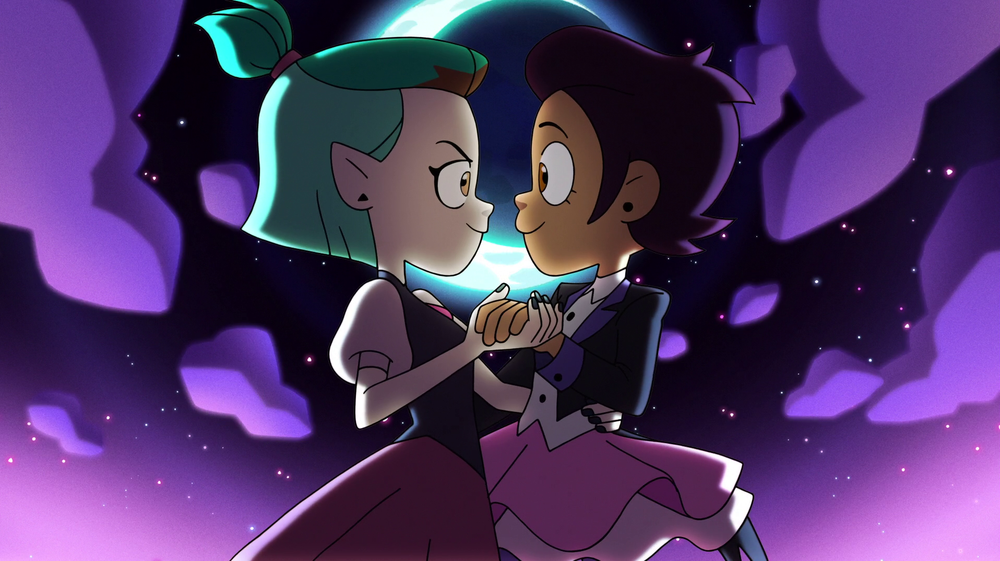
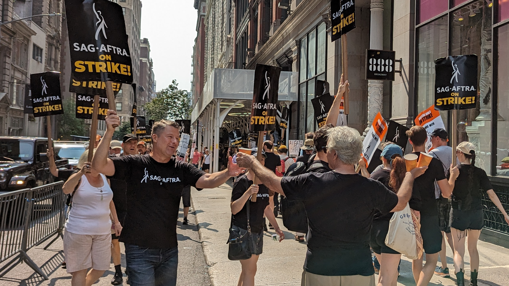

Introduction
It's quickly becoming a pervasive idea in online discourse that Disney has "lost its magic", so to say. People have varying opinions about why, right wing pundits would would tell you it's because Disney is woke and has "too much DEI", some on the left would say Disney's content isn't gay enough, and plenty of people will say their movies just aren't good anymore.
I'm not here to tell you that Disney has gone woke, and therefore broke. I do think that Disney's involvement in the "culture war" has caused them problems, but it's not the sole reason the quality of their media has declined, and its not because woke media is bad. The company has recently had a tumultuous leadership that has escaped one controversy and entered another, been attacked by Ron DeSantis, and has attempted to tamp down spending on its unprofitable streaming service.
Through the course of this article, I am going to take you through my opinions as a writer, and some evidence, on why Disney's media quality is suffering. A lot of the things I will talk about applies to other creative fields on a production — productions have many different roles, and all of them need to be successful for a good production.
Disney's Mistrust of Creatives
This is one of the more minor complaints among this list, but I think it lays down a good base for my point. It often feels like Disney doesn't trust its writers to actually make a good story, or trust that their audience is capable of handling the story that is being made.
I was just watching the movie Haunted Mansion (2023) with my girlfriend, and there's something very noticeable about this movie - it feels like it sets up an idea, and then meanders through being a mediocre comedy movie, before remembering that it had a vague idea of something to say.
It turns out, this movie was originally written by Guillermo del Toro in 2010, but Disney eventually decided, after hiring consultants to try to adjust del Toro's script, that his vision for the movie was just "too scary". Through the next 13 years, the project would have 12 writers#Development) touch the script to make it up to Disney's standards.
There is also, of course, the elephant in the room, The Owl House. It is widely circulated that The Owl House was cancelled because it is "too gay" for Disney, but that doesn't seem to be the case. Dana Terrace has said in interviews she was pretty up front with the show containing gay characters, and Disney put up little resistence about it.
© Disney 2020. Screenshot of The Owl House episode Enchanting Grom Fright, with Luz Noceda (main character) and Amity Blight holding hands.
Dana Terrace posted an "AMA" on the /r/TheOwlHouse subreddit where she says she doesn't assume bad faith against the "people I work with in LA", but she does say that the show didn't fit into an executive's view of the Disney brand.
At the end of the day, there are a few business people who oversee what fits into the Disney brand and one day one of those guys decided TOH didn't fit that "brand". The story is serialized (BARELY compared to any average anime lmao), our audience skews older, and that just didn't fit this one guy's tastes. That's it! Ain't that wild? Really grinds my guts, boils my brain, kicks my shins, all the things. It sucks but it is what it is.
Quote by The Owl House showrunner Dana Terrace on a Reddit "AMA".
Despite the statistical evidence, and large number of fans online, it would seem in the end a Disney exec didn't trust the show would fit into their brand image, whatever that means. If Disney can't trust their writers to be able to make interesting, creatively challenging movies or shows, why would anyone want to write for them?
Disney's Bad Marketing
Speaking of The Owl House, have you even heard of it? It was one of the most popular Disney TV Animation shows of the decade, and if you don't follow DTVA, you've probably never heard of it. You've probably never even heard of Disney Television Animation as a studio (at least not in a long time).
Where is the marketing for their projects? Where was the marketing for even their big name brands like Pixar? I barely even knew Wish or Elemental came out until I saw independent reviewers talking about it, and I am a Disney fan. You would think I would know these things.
I tried to watch The Little Mermaid (2023) with my girlfriend when it came to Disney+, and we could barely even find it without searching for it. I wanted to actually find it in the tiles, and I had to scroll about 11 rows of tiles down. This is a remake of one of their classics! Why was it not front and center?
Who wants to work on a Disney project when they can your (potentially) successful projects on a whim? One which they barely market, basically setting it up for failure?
Don't Say Gay
Disney was very slow to finally announce their opposition to the Florida Don't Say Gay bill, after many complaints from creatives and park employees that Disney didn't have their back. A lot of creative people tend to be LGBT, or allies of the LGBT.
During the controversy, Pixar's employees accused Disney of having "actively censored" overtly gay affection. This resulted in Lightyear (2020) having a cut gay kiss scene "restored" into the movie. Many people I have spoken to say that shouldn't have been necessary, and Disney should be less afraid of publishing content with overtly LGBT themes.
With some of the country trying to censor LGBT content, artists have become very frustrated with not being able to express themselves, both personally and in their media. It was felt like a huge missed opportunity for Disney to back up the community and make everyone feel welcome.
Hostile Union Negotiations
You may have remembered how the Writers Guild of America and SAG-AFTRA went on strike in 2023, citing low pay, poor employee treatment, and the threat of AI replacing workers.
A 2023 photo of SAG-AFTRA members striking in New York City, courtesy Eden, Janine, and Jim on Flickr.
During the strikes, which ran for almost 5 months, the AMPTP constantly jerked around the striking unions. They regularly refused to come to the negotiating table, "resuming" negotations on several occasions, like in August or October.
Even before the union strikes, Disney and their contractors have been having issues getting people to work on their projects because of the pay. Disney TVA's The Owl House had a light novel announced, with absolutely no communication from Disney, until the TOH creator herself had to break the news to the public about how Disney's partner TokyoPop failed to hire a writer... after the book was supposed to have released, and after pre-orders had been taken.
It certainly doesn't help that while the unions were striking, the CEO, Bob Iger, went on the news and said things about how the union demands are "disturbing" and "unrealistic". The demands of being paid enough to afford to live in the area around Disney and not be replaced with AI.
A Personal Note
Growing up, I always wanted to be a Disney animator. I thought the idea of making the media I watch was really cool. I took an animation class at one of my local community centers when I was small, and recently had an active interest in writing stories in the fantasy worlds I enjoy so much from Disney.
It's been very unfortunate to me that it's so hard to make a living off it, though. Disney et. al. make a bunch of money, why can't they pay their creative teams? I'd love to work in the field someday, but for now, it is a distant wish.
Many of my friends talk about their interest in making creative media. Stories, animations, art. The common theme amongst us all though is that it just doesn't put food on the table.
Conclusion
Systematically, it feels like corporate entertainment companies just don't value their creatives nearly as much as they should. Disney should reconsider their position and invest into the people who make their empire so large, and put more trust in both the creatives and the audience to be able to handle themselves.
For the prospective creatives, wouldn't it be nice to be able to afford to do this for a reasonable living? For the viewers, wouldn't it be nice to be trusted to handle more interesting and diverse content?
That's why I believe Disney should provide better pay and better creative assurances for their creative employees and better market their non-blockbuster media. It makes little sense why the company is spending the money to produce these movies and shows, and then failing to market them, and compromising them in ways both fans and artists get frustrated and turned away with.
This is all ultimately up to the Disney board, shareholders, and executives to realise, but I believe at some point they will. When you turn away enough of your potential creatives and enough of your audience, the ship will have to turn around, or sink. Please don't let the latter happen, Disney.